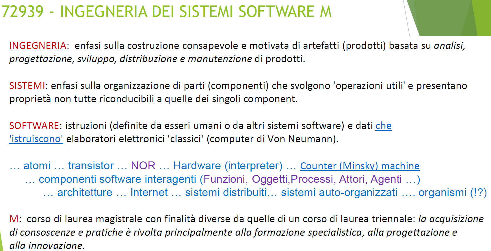
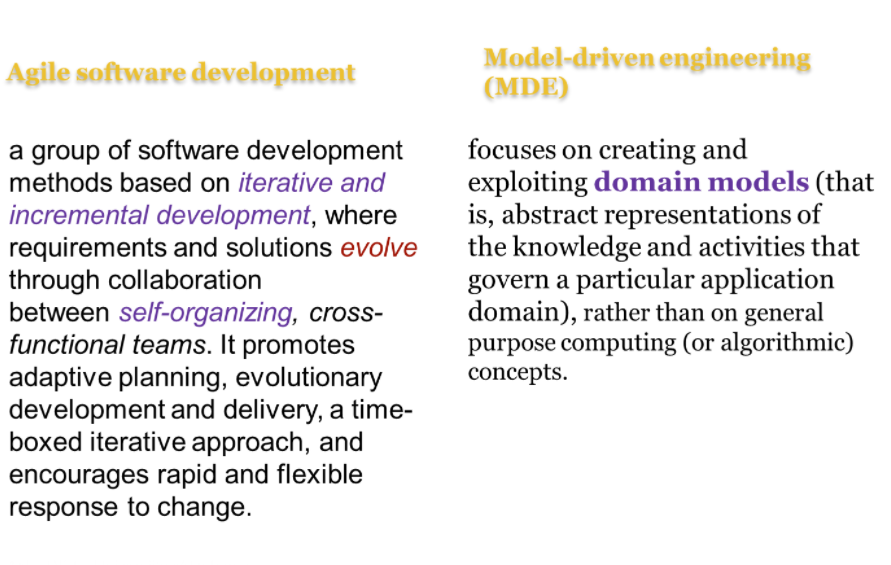
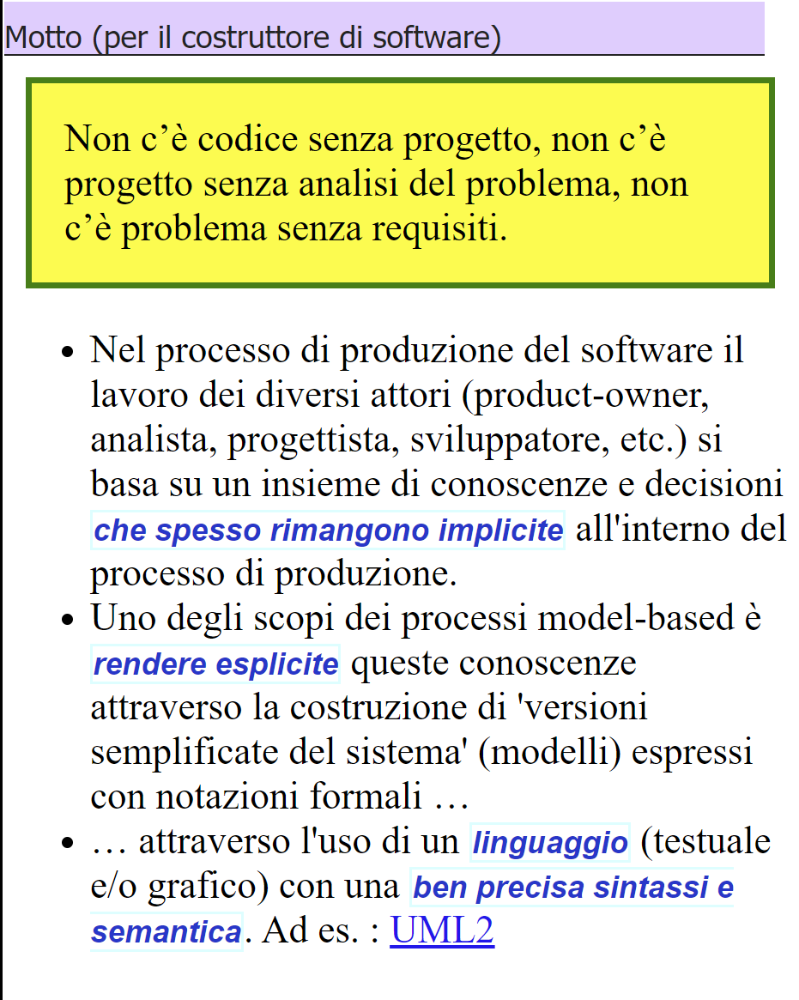
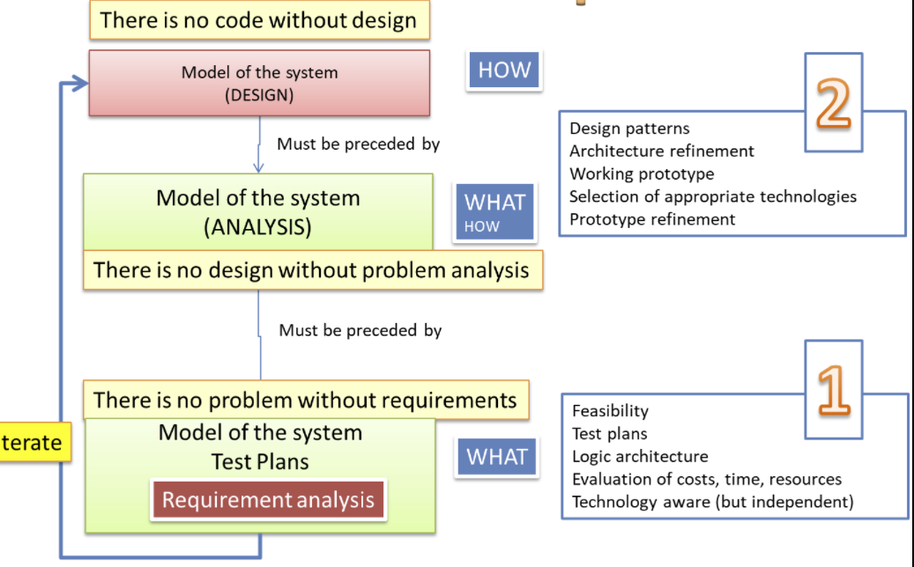
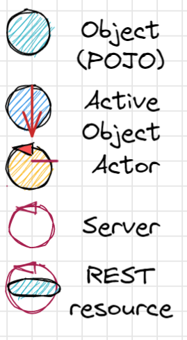

Introduzione¶
{kind=link}
Evoluzione del software¶
Il software ha circa 80 anni, e la sua evoluzione, ancora impetuosa, avviene in modo simile alla evoluzione
(più o meno Darwiniana) degli esseri viventi.
Sin dall’inizio si è sviluppata una evoluzione relativa a diversi aspetti:
Evoluzione dei paradigmi e dei linguaggi di programmazione¶
Sin dall’inizio si è sviluppata una evoluzione a livello di paradigma di programmazione, ovvero dell’insieme di strumenti concettuali forniti da un linguaggio di programmazione per la stesura del codice sorgente di un programma, definendo dunque il modo in cui il programmatore modella, concepisce e percepisce il programma stesso.
In questa sede ridordiamo solo
anni 60: programmazione procedurale (FORTRAN, COBOL)
primni anni 70: programmazione strutturata (Paascal, C)
metà anni 70: programmazione modulare (Modula)
tardi anni 70: programmazione per tipi di dati astratti
anni 80: programmazione orientata agli oggetti (Smalltalk, Java, …)
Stili di programmazione
Programmazione concorrente
Programmazione logica
Programmazione orientata agli eventi
Programmazione funzionale
Programmazione a vincoli
Evoluzione delle architetture¶
L’architettura è la forma di un sistema ed include la divisione del sistema in componenti, la disposizione di tali componenti e il modo in cui tali componenti comunicano tra loro.
Lo scopo dell’architettura è facilitare lo sviluppo, l’implementazione, il funzionamento e la manutenzione del sistema, lasciando aperte quante più opzioni possibili, il più a lungo possibile.
Pertanto l’architettura non dovrebbe solo supportare il comportamento, ma anche fornire flessibilità nel ciclo di vita del sistema.
Su queste premesse, si comprendono i diversi tipi di architetture dei sistemi software che sono state proposte e sviluppate nel corso del tempo:
single machine
monolitiche
cient-server
distribuite (service-based, event-driven, space-based, service-oriented, microservices)
evolutive
Evoluzione dei sistemi¶
Oltre a evoluzione di tipo generale, si può parlare anche di evoluzione dei singoli sistemi software.
Lehman, studioso dell’Imperial College di Londra, ha studiato per anni l’evoluzione di sistemi software che operano nel mondo reale (denominati E-type systems) cercando di individuare un insieme di comportamenti evolutivi, oggi noti come Leggi di Lehman.
L’evoluzione del software, per il suo rapido percorso rispetto ad altre entità create dall’uomo, è stata vista da Lehman come il “moscerino della frutta” dello studio dell’evoluzione dei sistemi artificiali.
Evoluzione dei processi di produzione¶
I processi waterfall dell’ingegneria tradizionale, lasciano il posto a processi basati su Metodologia agile, di tipo iterativo e incrementale.
Nell’ingegneria tradizionale (meccanica, edile, etc) il costo del materiale costituisce spesso più del 50% del costo totale di un progetto, mentre nella produzione del software è il costo del lavoro ad essere preponderante: si parte dal 70% fino a giungere quasi al 100%.
L’ingegneria tradizionale ha anche sperimentato che un cambiamento di costo 1 in fase di analisi potrebbe costare 1000 in fase di produzione.

Per questo l’ingegneria classica diversifica le fasi di produzione delineando un ben noto flusso di lavoro (workflow) costituito da un insieme di passi (o tasks):
definizione e analisi dei requisiti
analisi del problema
progetto della soluzione
realizzazione del prodotto
collaudo
messa in opera e manutenzione
Nella costruzione del software, il modello a cascata porta spesso ad alti costi di produzione del software spesso dovuti al modello a cascata, a causa delle specifiche poco complete e ai molti interventi successivi per introdurre funzionalità non previste in partenza.
Capita, quindi, che le pecche del modello vadano a ricadere sulla manutenzione, causandone costi crescenti, o che, al contrario, si operi con una manutenzione sommaria producendo un software con un’implementazione che diverge dalle specifiche dei requisiti.
La letteratura (si veda ad esempio SEDisasters) riporta inoltre casi di fallimento di un numero sorprendentemente rilevante di progetti software, evidenziando un insieme di cause principali:
Cattiva specifica e gestione dei requisiti.
Comunicazioni ambigue ed imprecise tra i diversi attori del processo di produzione (utenti, manager, analisti, progettisti, implementatori).
Architetture finali del sistema fragili (non robuste).
Inconsistenze tra requisiti, progetto e realizzazione.
Collaudi inadeguati o insufficienti.
Inadeguata capacità di valutare e gestire i rischi e di controllare la propagazione dei cambiamenti.
Queste potenziali fonti di insuccesso hanno amplificato la loro influenza nel momento in cui l’intera disciplina ha vissuto la transizione da una dimensione prevalentemente algoritmico-trasformazionale a un dimensione fortemente sistemistico-architetturale.
Oggi si ritiene che un approccio INCREMENTALE sia indispensabile per aggredire la complessità del problema e per mettere in luce in primis LE COSE PIU’ IMPORTANTI e PIU’ CRITICHE senza perdersi in dettagli che possono distogliere l’attenzione per formare un quadro generale di riferimento.

|
L’approccio descritto in SCRUM Guide è oggi un punto di riferimento. I vari SPRINT dovrebbero effettuare uno ZOOMING entro MACRO-COMPONENTI innescando un processo ITERATIVO di analisi, progetto , sviluppo e testing di quel componente o del SOTTOSISTEMA che lo SPRINT vuole costruire. |
Per la progettazione di sistemi software si fa spesso ricorso a un insieme di Principi, tra cui:
Al centro del processo di sviluppo, oggi viene posto il concetto di modello del dominio applicativo.
{kind=link}
Partiamo da un insieme di requisiti espressi in linguaggio naturale
Impostiamo una analisi dei requisiti che mira a esprimerli in modo formale e comprensibile a una macchina
Imppostiamo una analisi del problema che mira a definire:
una architettura logica del sistema
un piano di lavoro
un insieme di piani di testing, espressi in MODO comprensibile a una macchina
un primo SPRINT relizzativo
Impostiamo ogni SPRINT come un sottoprogetto con sua propria spiegazione e testing.
Lo SPRINT \(n+1\) parte dai risultati dello sprint \(n\) e costruisce un sottosistema (funzionante) che sarà l’input dello SPRINT \(n+2\).
Facciamo seguire ad ogni SPRINT una fase di Sprint review i cui meeting saranno
un nuovo modo di concepire le ore di ricevimento-studenti.
Per ogni SPRINT, compiliamo un documento (si veda template2023) per rendere esplcite le conoscenze, le decisioni, i modelli, etc. introdotti nello SPRINT, fornendo indicazioni su come eseguire lo SPRINT.
Il template va inteso come un diario di bordo, da compilare in itinere man mano si svolge il processo di produzione e non dopo avere sviluppato il codice.
Il motto¶
Per focalizzare l’attenzione sulla nostra metodologia di costruzione, cercheremo di tenere fede al seguente motto:
Design first |
TopDown process |
|  |  |
Contenuti del corso¶
Partendo da queste premesse, riportiamo qui quanto si legge nel Sito Web del corso :
Al termine del corso lo studente:
è in grado di impostare processi di sviluppo cooperativo del software basati su approcci agili (in particolare SCRUM) avvalendosi anche di modelli eseguibili, espressi mediante meta-modelli custom;
è’ in grado di progettare e sviluppare sistemi software e relativi piani di testing in modo incrementale ed evolutivo, partendo dal problema e dal dominio applicativo piuttosto che dalla tecnologia realizzativa, attraverso la definizione di modelli eseguibili dell’analisi dei requisiti e dell’analisi del problema;
è in grado di valutare in modo critico le continua evoluzione delle tecnologie informatiche, sia a livello computazionale, sia livello di sviluppo-software, acquisendo conoscenze teorico-operative su linguaggi, metododologie e strumenti quali Kotlin, Gradle, SCRUM, SpringBoot, Docker;
è in grado di comprendere il ruolo dei diversi stili di architetture software (layers, client-server, pipeline, microkernel, service-based, event-driven, space-based, microservices) e di come scegliere lo stile architetturale più opportuno per i diversi sotto-sistemi individuati;
è in grado di affrontare l’analisi, il progetto e la costruzione di applicazioni distribuite ed eterogenee di tipo proattivo e/o reattivo (unitamente a loro possibili piattaforme di sviluppo e di supporto run-time) con particolare riferimento a modelli computazionali a scambio di messaggi e ad eventi;
è in grado di realizzare le interazioni a scambio di messaggi tra componenti distribuiti utilizzando modelli logici di alto livello e implementazioni basate su protocolli diversi (TCP, UDP, HTTP, CoAP, MQTT);
è in grado di comprendere come sia possibile progettare e costruire ambienti di sviluppo custom capaci di generazione automatica di codice (Software Factories in ‘ecosistemi’ come Eclipse/IntelliJ), basandosi su Model Driven Software Development (MDSD) e sull’uso di Domain Specific Languages (DSL);
è in grado di sviluppare applicazioni capaci di combinare aspetti di alto livello (in particolare di AI) con aspetti di basso livello relativi a dispositivi di Internet of Things (IOT), utilizzando sia ambienti virtuali sia dispositivi reali costruibili utilizzando elaboratori a basso costo quali RaspberryPi e Arduino;
è in grado di applicare i concetti, i dispositivi, e gli strumenti sviluppati in modo concreto ed operativo durante il corso per lo sviluppo di una applicazione finale che utilizza uno o più dispositivi IOT ‘situati’, con particolare riferimento a Differental Drive Robots (DDR) con sensori che possono agire in modo relativamente autonomo in diversi ambienti virtuali o reali, senza modificare il software che esprime la ‘business logic’ del problema.
Pe raggiungere questi obiettivi, il corso 2022-2023 si articolerà in tre fasi:
Tutto il software sviluppato durante il corso sarà utile per l’applicazione finale
FASE1¶
Questa fase verrà svolta alternando considerazioni teorico-metodologiche alla costruzione effettiva di prodotti software, articolata in diversi SPRINT, con autovalutazione del lavoro svolto, nel quadro delle Sprint review.
Inizieremo con un approccio bottom-up, partendo dalle tecnologie disponibili.

|
Svilupperemo applicazioni proattive/reattive basate su componenti che interagiscono a scambio di messaggi con interazioni sincrone e/o asincrone. A tal fine, useremo un ambiente virtuale (denominato |
Durante lo sviluppo di queste applicazioni, a complessità crescente, avremo modo di costruire infrastrutture di supporto e astrazioni di componenti e di comunicazione capaci di agevolare il compito dell’application-designer.
|  | 
|
{kind=link}
Il modello di programmazione a scambio di messaggi portato a livello di componenti.
Introduzione al linguaggio Kotlin.
Dalle coroutine Kotlin agli attori Kotlin.
Da attori message-driven ad attori message-based che operano come automi a stati finiti.
Definizione di una infrastruttura per attori come supporto alla costruzione di software distribuiti ed eterogeni.
FASE2¶
L’esperienza maturata nella FASE1 ci porta a valutare, durante L’analisi del problema l’abstraction gap tra un problema dato e le tecnologie esistenti
Abstraction gap¶
Con il termine abstraction gap intendiamo denotare la distanza tra le mosse di base fornite da un automa o da un linguaggio di programmazione (general-purpose) e quelle necessarie per affrontare in modo adeguato un problema applicativo.
Un abstraction gap elevato induce ad impostare il processo di produzione in modo TopDown, cercando di trovare le strategie migliori per colmare il gap, scegliendo o sviluppando le tecnologie disponibili più opportune, che non sono più un assunto a-priori.

|

|
In questa fase:
Presenteremo la definizione di un linguaggio/metamodello custom (QActor) per la costruzione di sistemi basati su attori
Cercheremo di valutare il vantaggio dell’uso di modelli eseguibili nelle fasi di analisi dei requisiti e del problema e come premessa per l’abbattimento dei costi (e degli imprevisti) di produzione.
FASE3¶
Applicazione di quanto sviluppato per la costruzione di una che prevede anche l’utilizzo di robot reali, costruiti estendendo il sistema della FASE1.

Materiale didattico¶
Documento template2023: costituisce un punto di riferimento ‘process agnostic’, cioè non indica il processo di sviluppo che adottiamo per costruirlo.
Alcuni Libri importanti/utili
Video tema finale studenti (Panopto) VideoStudenti
Siti del corso:
Valutazione finale¶
Dal Sito Web del corso leggiamo:
Le attività di laboratorio sono intrinsecamente connesse in modo continuo a una autovalutazione del lavoro svolto da parte di ogni singolo studente.
Al termine del corso, viene proposto un tema di progetto come naturale sintesi delle attività svolte, da affrontare in due fasi.
La prima fase inizia con la pubblicazione di un testo di requisiti per la costruzione di un prototipo La costruzione del prototipo mira a verificare il raggiungimento di adeguate abilità teorico/pratiche e può essere effettuata in modo individuale o in un gruppo di non più di tre studenti.
Al termine di questa fase seguirà una una discussione individuale orale sul lavoro svolto, volta a valutare il livello di conoscenza, consapevolezza e di autonomia analitico/progettuale del singolo studente.
In questa fase lo studente è invitato a porre in luce gli aspetti salienti del lavoro svolto e le scelte effettuate alla luce delle nozioni teorico/pratiche apprese durante il corso.
Maggiori dettagli si trovano in Criteri di valutazione.
TODO: GIT repo e template2023
DA FARE¶
Attivare un proprio repository GIT privato, dando possibilità di accesso al docente
Nel repository inserire una prima directory denominata
DeliverablesCompilare il template2023 inserendo una propria foto (recente) e ridenominaare il file CognomeNomeTemplate.html
Eseguire quanto riportato in: Installazioni su PC
Eseguire quanto riportato in: Come attivare WEnv